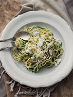

Cheveux d’ange aux courgettes menthe et féta
Ingrédients :
- • 16 oz de cheveux d'ange
- • 2 c. à soupe d'huile d'olive
- • 1 c. à soupe de beurre
- • 2 courgettes vertes, coupées en fines juliennes
- • 2 courgettes jaunes, coupées en fines juliennes
- • 1 gousse d'ail, hachée finement
- • 1/2 c. à thé de piment broyé
- • 1/2 tasse de menthe, ciselée
- • 1/2 tasse de féta, émietté
- • Sel et poivre, au goût
Étapes
- • Cuire les pâtes dans un grand chaudron d'eau salée, puis égoutter en conservant 1/2 tasse de l'eau de cuisson. Réserver.
- • Dans le même chaudron à feu moyen, faire chauffer l'huile d'olive et le beurre, puis faire revenir les courgettes, l'ail et le piment broyé pendant 5 minutes.
- • Ajouter les pâtes, la 1/2 tasse d'eau de cuisson ainsi que la menthe ciselée. Mélanger, parsemer de féta, puis rectifier l'assaisonnement au besoin.